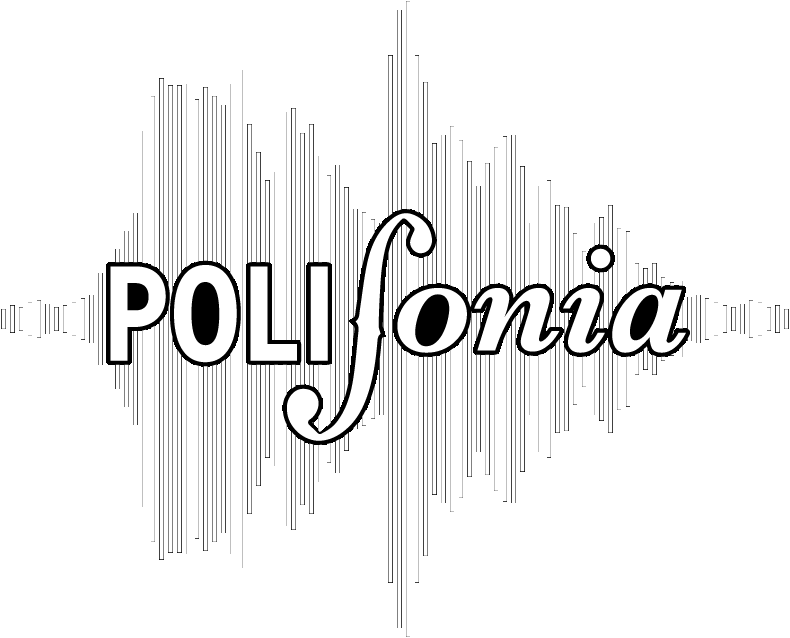

-
PoliEdroDal 2012 vuole essere un punto di riferimento per tutti gli studenti del Politecnico di Milano, in particolar modo per gli studenti LGBTI+ (Lesbiche, Gay, Bisex, Trans, ...). Organizziamo eventi di carattere culturale, come discussioni su tematiche attuali e conferenze con personaggi rilevanti sulla scena LGBTI+, oltre che ed eventi esterni per fare gruppo. Dal 2017 organizza PoliMi Pride per portare il volto del Politecnico al Milano Pride.
-
Erasmus Student Network - ESN Politecnico Milano is a non-profit, apolitical association of students founded in 1992. Its aim is to support the student exchange programs, supplying information and any kind of help that can be voluntarily given by its members. ESN Politecnico is member of the Italian network, ESN Italia, and of the international one, ESN International, since December 1994. ESN International is a pan-European student organisation which was founded in Copenhagen in 1990. Since then, the network has expanded considerably. At the moment ESN consists of more than 250 sections in 30 countries. Despite its name, the network is devoted to students participating in all exchange programmes in Europe.
 ESN - Erasmus Student Network
ESN - Erasmus Student Network
-
 POLI.RADIOPOLI.RADIO è la webradio ufficiale degli studenti del Politecnico di Milano.
Suona la musica che già conosci e quella che non hai mai sentito. Indie, alternative e rock classico: secondo il format radiofonico AAA (Adult Album Alternative). -
 PolifoniaPolifonia nasce dall'esigenza di creare un’identità musicale, artistica e creativa all'interno del Politecnico. Si pone come obiettivo quello di consentire agli studenti di esprimersi in tutti i modi possibili attraverso la musica e di fornire loro uno spazio e degli eventi per potersi esibire.
-
Svoltastudenti nasce nel 2008 ed è la prima associazione studentesca italiana e no-profit a rispecchiare il modello anglosassone delle students’ union. Non abbiamo legami con nessun tipo di partito politico, movimento o gruppo religioso. Siamo una community, un gruppo eterogeneo di ragazzi provenienti dalla maggior parte dei corsi del Politecnico, uniti da un solo ideale: coinvolgere gli studenti a 360°. Come Associazione crediamo che l’esperienza universitaria non debba essere limitata alle sole ore di lezione: per questo organizziamo viaggi, attività sportive e culturali a cui tutti gli studenti possono partecipare. La rappresentanza è l’altra anima di Svoltastudenti. Ci battiamo costantemente per la meritocrazia e le pari possibilità, riteniamo importanti una didattica di qualità e le esperienze internazionali, occasione di confronto e crescita. Noi rappresentanti siamo degli studenti come chiunque altro e siamo in contatto con i responsabili della didattica e dell’amministrazione e siamo in grado di darti una mano per le questioni più rilevanti: |indirizzarti a chi di dovere per problemi coi professori, darti informazioni su bandi quali Erasmus e Diritto allo studio, portare avanti le tue cause e le tue idee per migliorare il Politecnico. Se hai dei dubbi riguardanti la didattica o hai un'idea che vorresti sviluppare all'interno del Politecnico, contattaci sui nostri canali social Instagram e Facebook
 Svoltastudenti
Svoltastudenti
-
La Terna Sinistrorsa è una lista di rappresentanza studentesca presente al Politecnico di Milano dal 1995, aperta e apartitica. Ci proponiamo come luogo di dibattito per lo sviluppo di idee efficaci ed innovative che amplino le possibilità dell’Ateneo, dando a tutti spazio di opinione e confronto.
 La Terna Sinistrorsa
La Terna Sinistrorsa
La nostra idea di Università si basa sul diritto allo studio, qualità della didattica, laicità, antifascismo e lotta a qualsiasi discriminazione e disuguaglianza.
Insieme all’attività di rappresentanza valorizziamo la vita universitaria con attività culturali di vario genere, dalla storica visita alla Biennale di Venezia alle giornate di divertimento nel campus Bovisa, i Poligames!
Tanto altro si può trovare nei nostri social, c’è tutto un mondo da scoprire, partecipa anche tu!